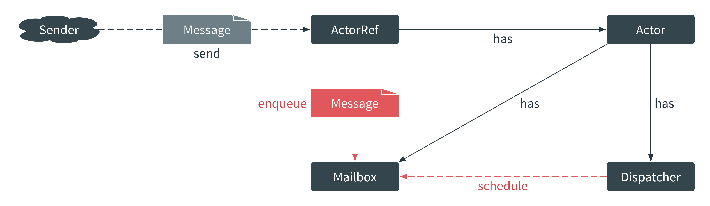
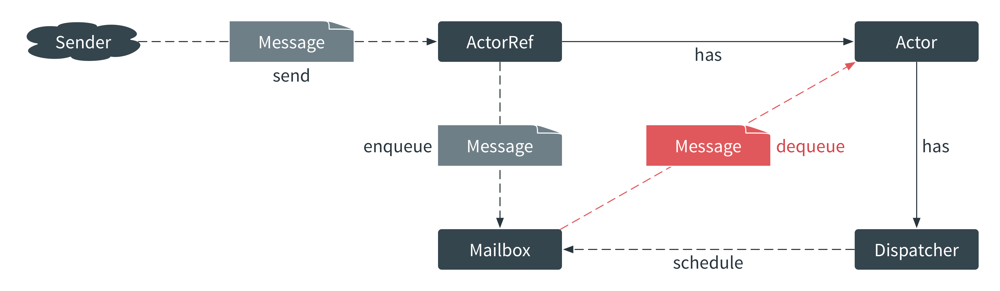
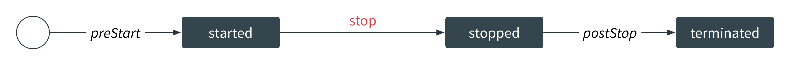
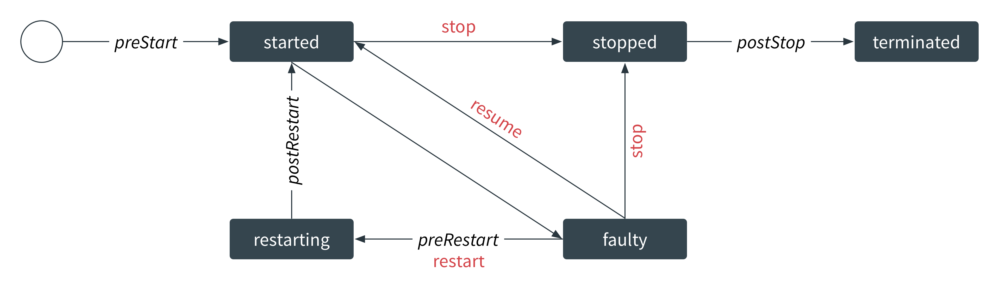
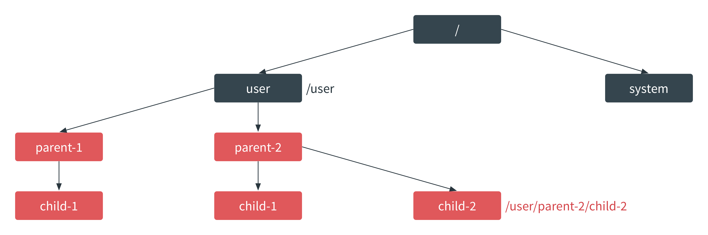

Exercise in exercise analysis
Jan Macháček @honzam399
What is Akka?
Akka is a toolkit and runtime for building highly concurrent, distributed, and fault tolerant event-driven applications on the JVM.
Simpler concurrency
- Actors let us write code in a single-threaded illusion
- No locks,
synchronizedor other primitives needed
Simpler distribution
- Everything in Akka is distributed by default
- Akka goes from remote to local by optimization
Simpler fault tolerance
Akka decouples communication from failure handling:
- Supervisors handle failure
- Callers need not care (they can't anyway)
Anatomy of an Actor I
Anatomy of an Actor II
Anatomy of an Actor III
Actor Lifecycle I
Actor Lifecycle II
Actor Lifecycle III
Actor System
Akka
- Actor concurrency toolkit and runtime
- Akka isolates us from the mechanism of message passing and execution
- Actors handle messages
- Actors form hierarchies with parents supervising children
Functions
def fun1(a: Int): Int = a + a
def fun2(a: Int, b: Int): Int = a * b
def fun3(a: Int)(b: Int): Int = a * b
def fun4 = { x: Int ⇒ x + 4 }
fun1(5)
fun2(1, 2)
fun3(1)(2)
fun2(1, _)
fun3(1)
fun4(5)
Partial Functions
def fun4: Function1[Int, Int] = ...
def pfun: PartialFunction[A, B] = {
case SomeA ⇒ someB
case OtherA(p) ⇒ otherB
...
}
val a: A = ???
if (pfun.isDefinedAt(a)) pfun(a)
pfun(a)
Actors everywhere
class HelloWorldService extends Actor {
def receive: Receive = {
case request: HttpRequest ⇒
val response = HttpResponse(...)
sender() ! response
}
}
Actors everywhere
class HelloWorldServiceSpec
extends TestKit(ActorSystem())
with SpecificationLike with ImplicitSender {
val service = TestActorRef[HelloWorldService]
"Any request" should {
"Reply with Hello, world" in {
service ! HttpRequest()
expectMsgType[HttpResponse].entity
mustEqual HttpEntity("Hello, world")
}
}
}
Actors everywhere
object HelloWorld extends App {
val system = ActorSystem()
val service =
system.actorOf(Props[HelloWorldService])
IO(Http)(system) ! Http.Bind(
service, "0.0.0.0", port = 8080)
Console.readLine()
system.shutdown()
}
class HelloWorldService extends Actor { ... }
Expanding the world
- Load-balanced instances of actor systems, each with its API
- A cluster of actor systems, each with its API
Terminology
- Commands—inputs that needs validation, and may result in multiple events
- Events—validated commands that we promise to process
- Query—a "read command"


How to get there?


Demo
Exercise in Akka cluster

Q&A
Thank you!
- Code at github.com/eigengo/lift
- Tweets at @honzam399